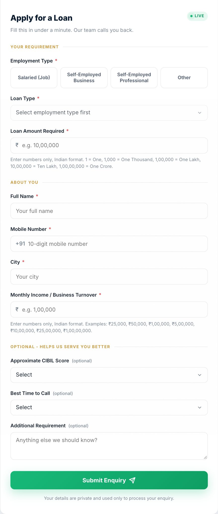

Tranquil Veda Private Limited
We build AI employees for businesses.
What we do now, how we do it, and where it is going. Every screen in this walkthrough is a real product we built.
A commodity trading desk
Their rules, executed by software.
- The desk's own strategy rules, written as configurationso they can read and change them
- Paper first, then livewith a kill switch and daily checks
- Every account, every strategy, one boardthe operator sees who is in a trade right now

A mutual fund distribution firm
A CRM built around how a distributor works.
- Investors, prospects, tasks, reviews, meetingsnineteen modules, one login
- The morning dashboardassets, SIPs, the month's business, who is overdue
- Next: the agent layera WhatsApp assistant, a research copilot, draft reviews


A wealth planning firm
Their Excel planner, rebuilt as software.
- Reproduces the firm's own numberschecked line by line against their workbook
- A few answers in, a full plan outgoals priced, the gap, what to tell the client
- A plan pack the client opens on their phonesent on WhatsApp

Smaller builds
Chat that answers, then calls back.
- A real estate developerwebsite chat in English and Marathi; when a buyer leaves a number, an AI voice call goes out within a minute, qualifies, and books the site visit
- A loan agenta ten-field enquiry form that adapts to the applicant, instant WhatsApp and email alerts, every lead in one sheet
- A food businessorders captured on WhatsApp, checked against recipes and vendor rates, turned into quotations and invoices

